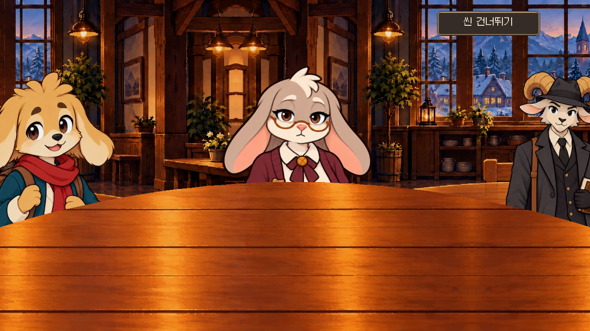
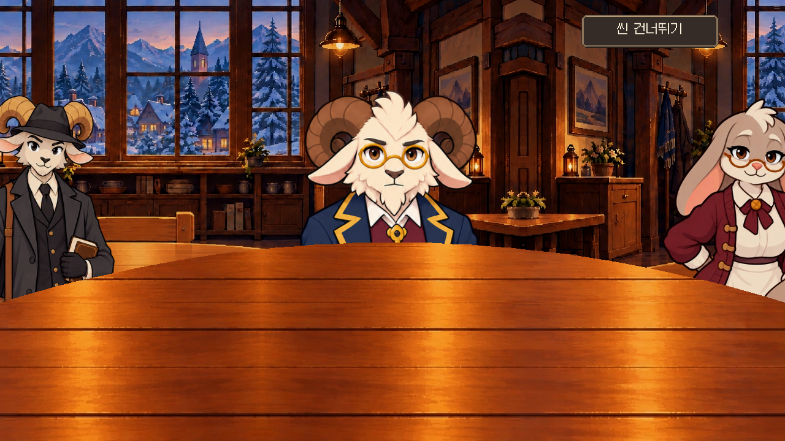
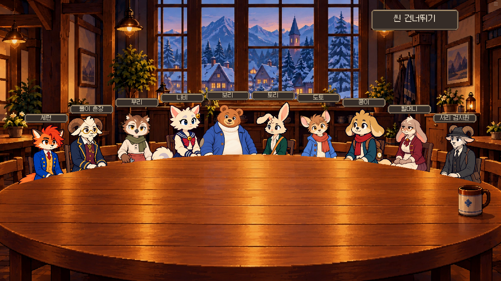
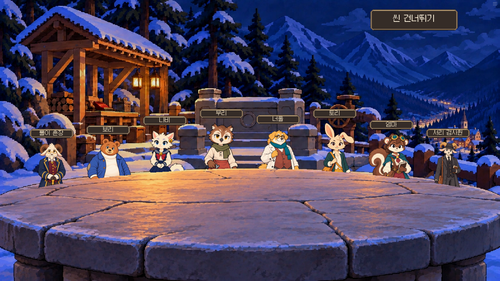
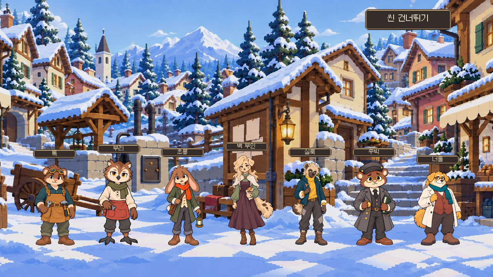
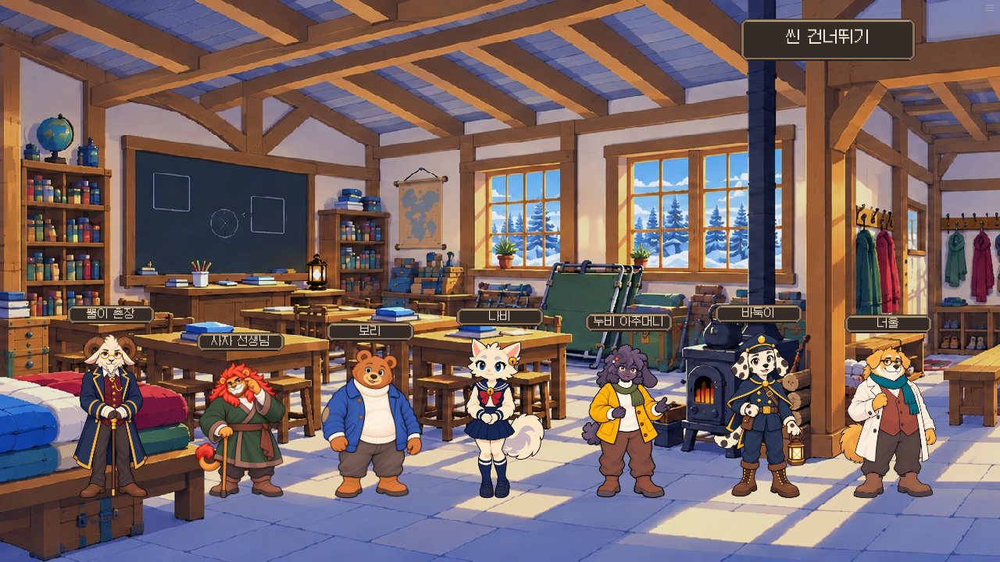
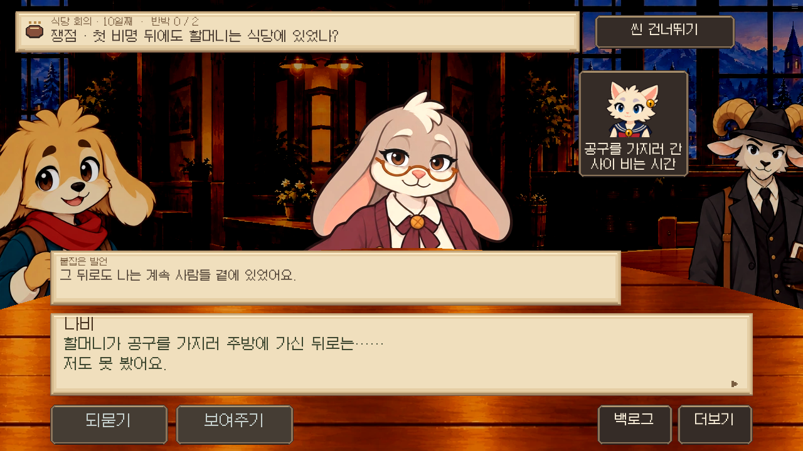
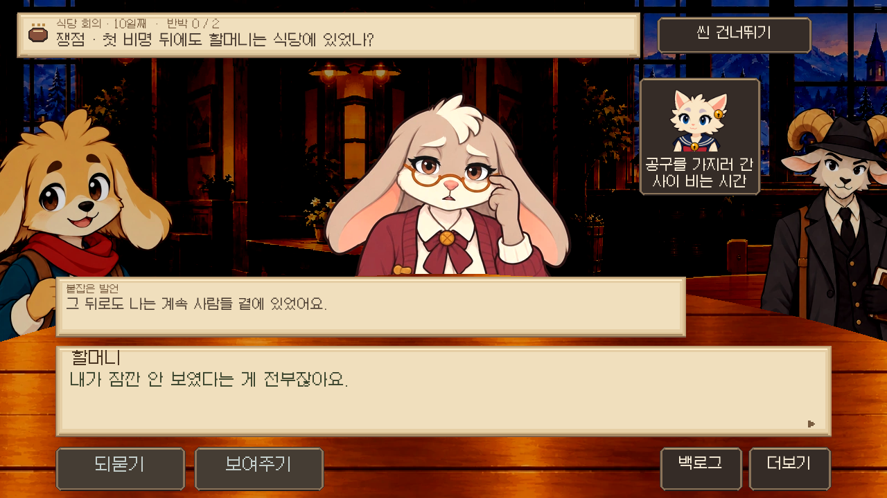
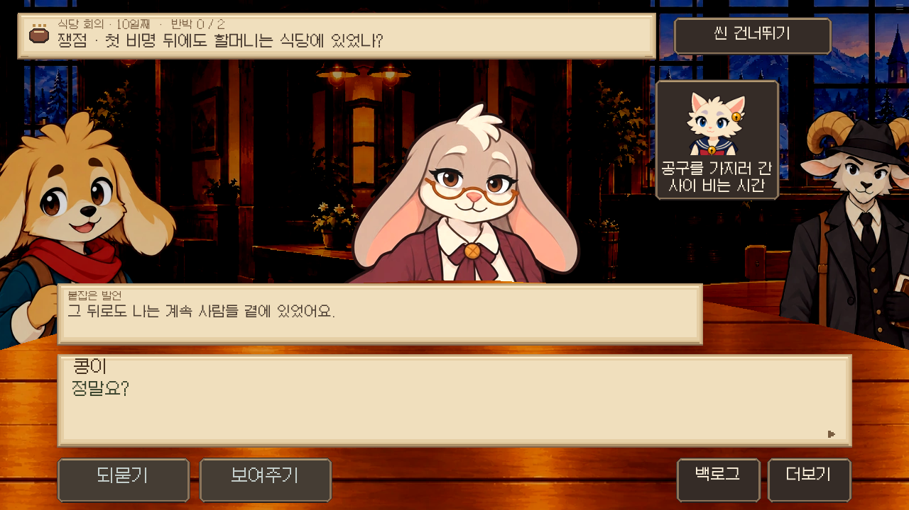

최신 실제 발언·반박·선택지·증거창 검수
회의 원화와 실제 E12 경로
frames는 production renderer 상태 fixture이며 자연 진행 재현이 아닙니다. proof는 실제 증거제시 label 호출과 저장/불러오기입니다. 최종 학교 열 위치는 별도 바둑이 검수 보고서에 있습니다. 패킷 간 rollback 미검증.
frames/00-C1-seryeon.png
frames/01-C3-granny.png

frames/02-C2-resident_seori.png
frames/03-F1-resident_ppul.png
frames/04-Q4-resident_ppul.png

frames/05-Q6-resident_ppul.png
frames/06-C2-resident_ppul.png
frames/07-C2-buri.png
frames/08-C3-nabi.png
frames/C2-ensemble.png

frames/F1-ensemble.png

frames/Q1-ensemble.png

frames/Q3-ensemble.png

proof/01-nabi-e12.png

proof/02-line.png

proof/03-line.png
